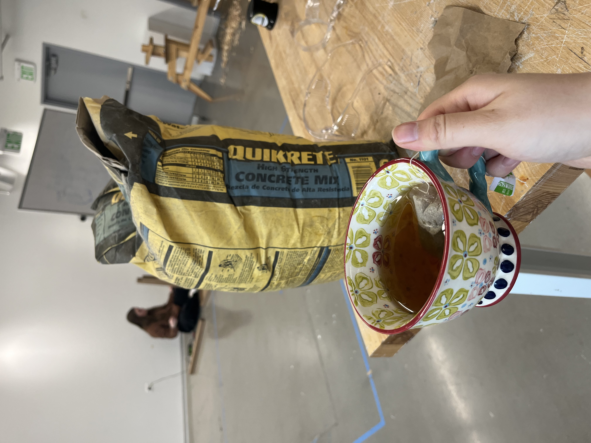
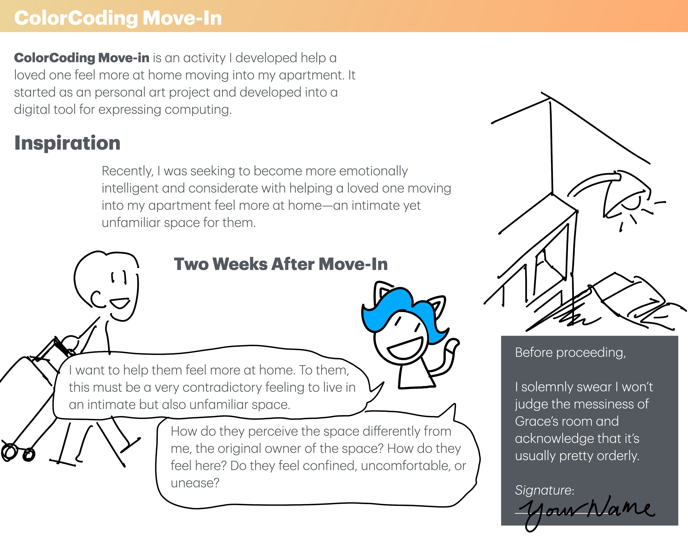
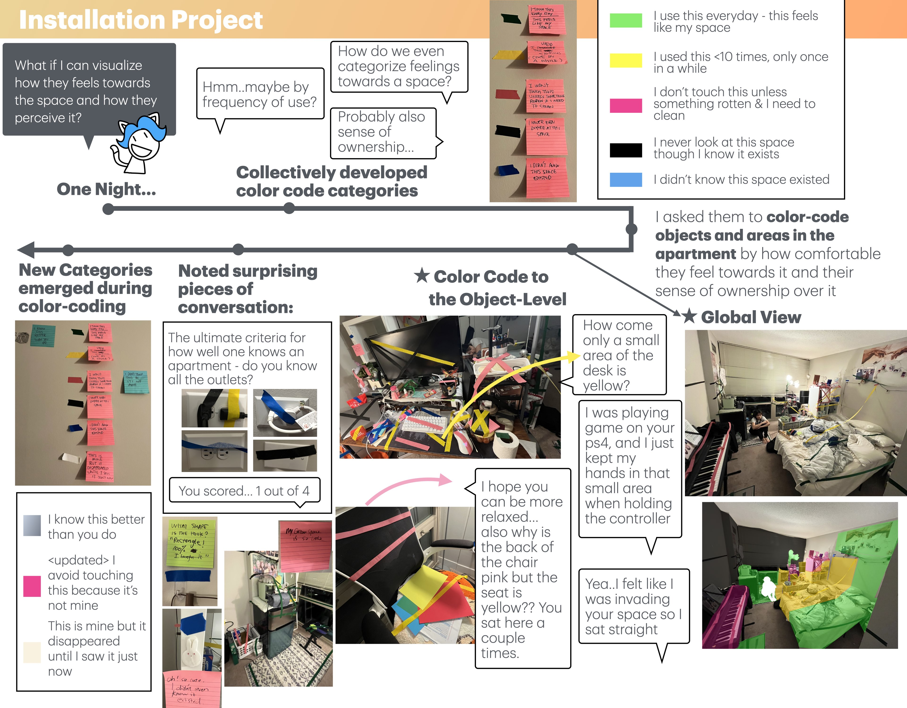

Loosely
Assembled
Order
Artworks by Grace Wang

I CREATE PRIVATE INSTALLATIONS—works not meant for public display, but intimate, exploratory spaces for me that help strengthen my self-agency.
AT THE SAME TIME, I design computer systems that do the same for everyone: tools that encourage reflection, expression, and autonomy through creative interaction.
ART AND RESEARCH are not separate parts of my life. They are two expressions of the same question →→→→→→→→→
" How can we design creative experiences that nurture our ability to act with intention, reflect with clarity, and live with agency? "
MY ART BEGINS IN THE PERSONAL. When my (ex)partner moved into my apartment—for them, an unfamiliar yet intimate living space—I created a color-coded system to mark their comfort with each part of the room. Not for anyone to see but a way for us to understand and communicate a complex emotional landscape. Moments like this form the core of my practice.


Color-Coding Move-In, 2025

